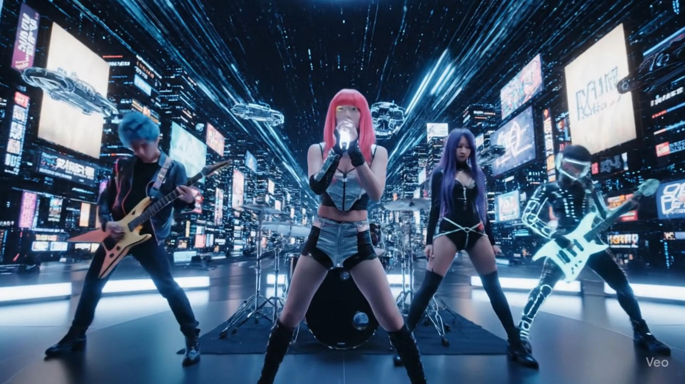
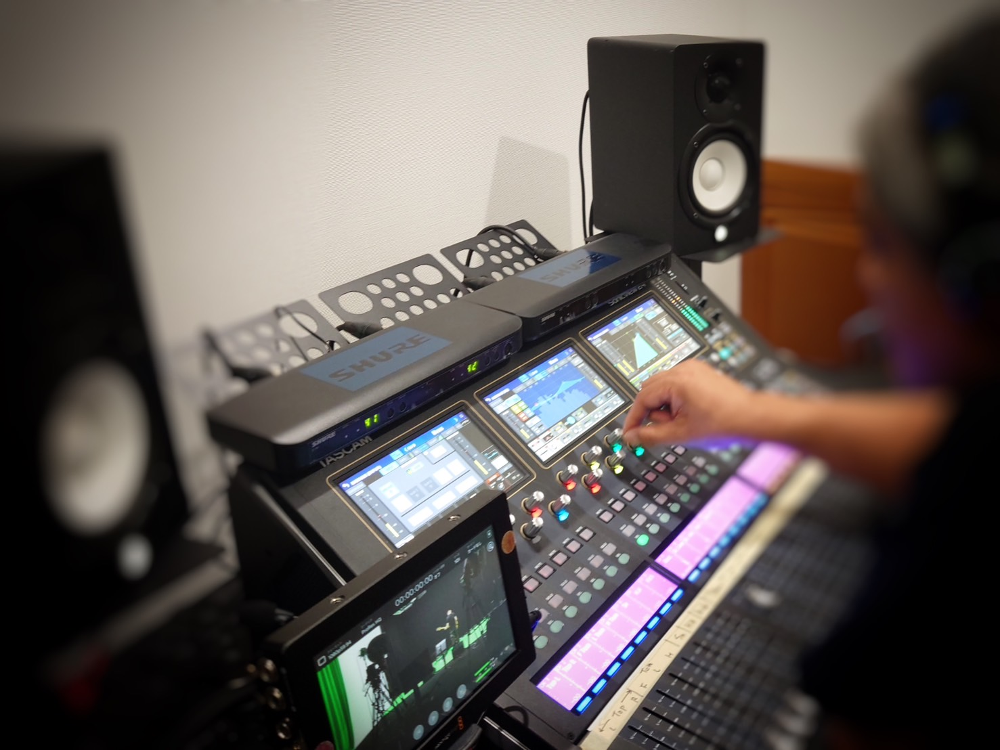

2025.08.27
開放的な多目的ラウンジが支える大規模プロジェクトの撮影ミーティング｜スタジオQ（大阪）
大阪・スタジオQの多目的ラウンジは最大40名収容。撮影ミーティング、クライアント対応、スタッフ作業まで多用途に活用可能。動画制作会社向けに最適な環境をご紹介します。
最新の撮影テクニックやスタジオの活用方法をご紹介
大阪・スタジオQの多目的ラウンジは最大40名収容。撮影ミーティング、クライアント対応、スタッフ作業まで多用途に活用可能。動画制作会社向けに最適な環境をご紹介します。

大阪のスタジオQは、演奏動画の撮影に最適。4カメのマルチアングル、完全防音で同録対応、天井高5m・22坪の広さ。ミュージックビデオ風の映像を気軽に楽しく制作し、YouTubeやSNSで発信できます。

大阪市内の合成撮影スタジオをお探しならスタジオQへ。特にYouTube動画やテレビCMの撮影では、安定したライティングと静粛な収録環境、そして確実なクロマキー処理が求められます。スタジオQは、その要件を満たす設備と運用で、安心の制作体制をご提供します。

大阪・スタジオQは天井高5m・広さ22坪の大空間。グリーンバック合成、バーチャル撮影、同録、コスプレ撮影まで迫力と効率を両立する撮影環境をご紹介します。

プロフェッショナルなグリーンスクリーン撮影を行うための基本技術とコツをご紹介します。

音楽ライブ配信を成功させるための機材選びから配信設定まで、完璧なセットアップ方法を解説します。